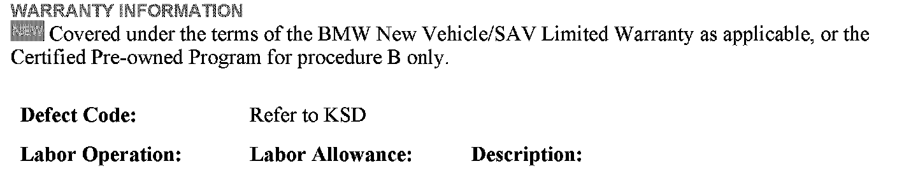
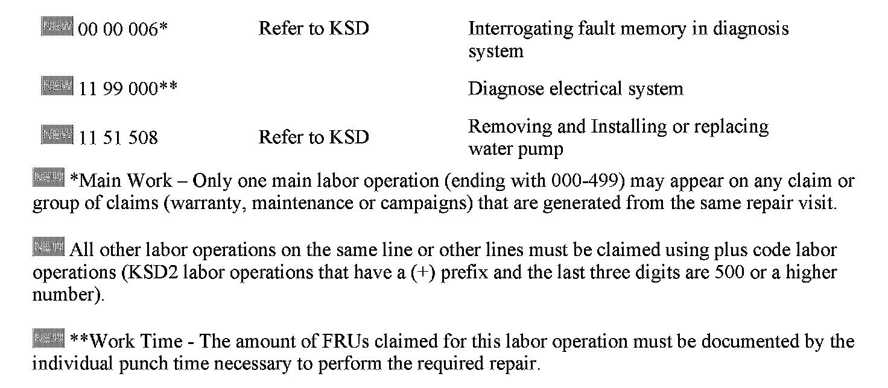

Cooling System - MIL ON/Engine Overheating/DTC's Set
SI B12 04 05Engine Electrical Systems
November 2010
Technical Service
This Service Information bulletin supersedes SI B12 04 05 dated October 2008.
[NEW] designates changes to this revision
SUBJECT
Check Engine Lamp Illuminated and/or Vehicle Overheats
MODEL
E83 (X3) with N52K engine
E85 and E86 (Z4) with N52 engine
E70 (X5) with N52K engine
E90, E91, E92 and E93 (3 Series) with N51, N52 and N52K engines
E60 and E61 (5 Series) with N52 and N52K engine
All models above produced up to December 31st, 2006
SITUATION
The customer complains that the Check Engine lamp is illuminated and/or that the vehicle overheated
One or more of the following fault codes is stored in the DME:
FC 2E81 Electric coolant pump, speed deviation, speed outside the tolerance
FC 2E82 Electric coolant pump cutoff, over-current
FC 2E83 Electric coolant pump, power-reduced operation, dry run
FC 2E84 Electric coolant pump, communication
FC 2E85 Electric coolant pump, communication, no voltage at emergency operation input of pump
CAUSE
One of the following can be the cause:
^ Insufficient power supply
^ Insufficient grounding
^ BSD signal not present
^ Defective electric coolant water pump
^ Electric coolant pump water pump processor disturbance
PROCEDURE A
This procedure only applies to vehicles produced after September 1, 2005. Both faults must be stored; if any other combination of the faults is stored, refer to procedure B.
^ FC 2E81 Electric coolant pump, speed deviation, speed outside the tolerance
^ FC 2E85 Electric coolant pump, communication, no voltage at emergency operation input of pump
1. Remove both battery cables from the battery for 15 minutes.
2. After reconnecting the battery cables, clear the vehicle fault memory and ensure that the electric coolant pump operates using the bleeding procedure, described at the end of this bulletin.
PROCEDURE B
This procedure applies to all vehicles with any combination of faults listed below.
FC 2E81 Electric coolant pump, speed deviation, speed outside the tolerance
FC 2E82 Electric coolant pump cutoff, over-current
FC 2E83 Electric coolant pump, power-reduced operation, dry run
FC 2E84 Electric coolant pump, communication
FC 2E85 Electric coolant pump, communication, no voltage at emergency operation input of pump
Note:
All measurements should be performed with the battery charger connected to the vehicle.
1. Measure the following at connector X6035 on the electric coolant water pump:
^ E90 and E91 - Pin 1 (fuse F09) and Pin 4 ground (X6455) = 12 volts
^ E60 and E61 - Pin 1 (fuse F23 and Pin 4 ground (X6455) = 12 volts
^ Pin 2 (fuse F02) and Pin 4 ground (X6455) = 12 volts
^ Pin 3 BSD signal (DME Pin 26) and Pin 4 ground (X6455) = 7.5 - 8.5 volts
^ If any of the above measurements are incorrect, continue troubleshooting using ISTA/D to determine the source of the problem.
^ If all of the above measurements are correct, proceed to step 2.
2. Replace the electric coolant water pump (P/N 11 51 7 546 994) in accordance with Repair Instruction RA 11 51 000.
3. After performing any service work requiring draining of the coolant, the system must be bled to ensure that there are no air pockets present. The system can be bled using ISTA/D or by following a special procedure. To bleed the system, follow the procedure described at the end of this bulletin.
BLEEDING (VENTING) THE COOLING SYSTEM
Note:
BMW recommends filling the cooling system for protection against freezing down to -34°F (-37°C); this is an antifreeze ratio of 50% antifreeze and 50% water. In severely cold areas, the antifreeze can be increased to 60%, which provides freezing protection down to -62°F (-52°C).
Do not exceed a 60% ratio of antifreeze.
The specified antifreeze ratio is important, since an insufficient amount would impair antifreezing and corrosion-inhibiting protection. An excessive amount would not improve freezing protection, but would instead reduce freezing protection. At all times, the antifreeze and water should be premixed before pouring into the engine. If premixing is not performed, damage will occur to the water pump assembly.
Note:
Always connect a battery charger while performing the bleeding process.
1. Fill the system with coolant via the expansion tank (AGB). Top up the coolant level to the lower edge of the expansion tank.
2. Close the expansion tank.
3. Switch on the ignition.
4. Set heating to the maximum (temperature); switch on the blower (lowest stage).
5. Press the accelerator pedal module to the floor for at least 10 seconds. The engine must NOT be started.
6. Bleeding via EWP takes approximately 12 minutes. Then check the coolant level in the expansion tank; top up to the MAX marking if necessary.
7. Check the cooling circuit and drain the plugs for leaks.
8. If the procedure needs to be repeated several times, allow the DME to completely de-energize (remove the ignition key for approx. 3 minutes) and then repeat the procedure, starting from item 3.
PARTS INFORMATION


WARRANTY INFORMATION